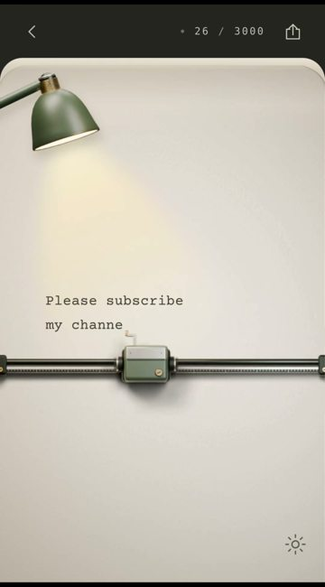

STEP 01 · N02
生成 UI 参考图
先确定竖屏纸面、导轨、滑块、台灯与模拟键盘的构图和质感。
语音分段 02.58—04.54 · 截图 04.45s从 22 秒原视频中，提取真实画面、提示词与制作顺序。先把参考看清楚，再决定怎样复刻。

两张方法卡属于步骤说明。12 张截图是观察节点，7 项任务是据此细化的工程安排。
先确定竖屏纸面、导轨、滑块、台灯与模拟键盘的构图和质感。
语音分段 02.58—04.54 · 截图 04.45sAI 通过 MCP 连接本地 Blender，制作模型、材料、透明图层与灯头角度素材。
语音分段 04.54—13.16 · 截图 07.50—12.70s输入带动键盘、滑块和灯头，支持开关灯、换行、计数与自动保存。
语音分段 13.16—16.28 · 截图 14.00—15.90s方法：全片按 0.5 秒采样定位，再提取 12 个关键全帧，逐帧读取提示词，并用本地语音自动转写交叉核对。语音时间为自动分段；不确定的识别词未作为准确引文。
选择节点查看原始全帧、局部放大与对应任务。文字中明确区分画面事实、原文与工程判断。
Task 1 交付本拆解。Task 2—7 为后续制作契约，每项都列出证据、前置、产物和验收要求。
Task 6 同时使用 Task 4 的灯头素材和 Task 5 的光标接口。拆分是本次工程安排，原作者的流程仍为三步。
核实三步流程，提取 12 个关键节点，整理原始提示词，制作 HTML，并据此建立后续任务契约。